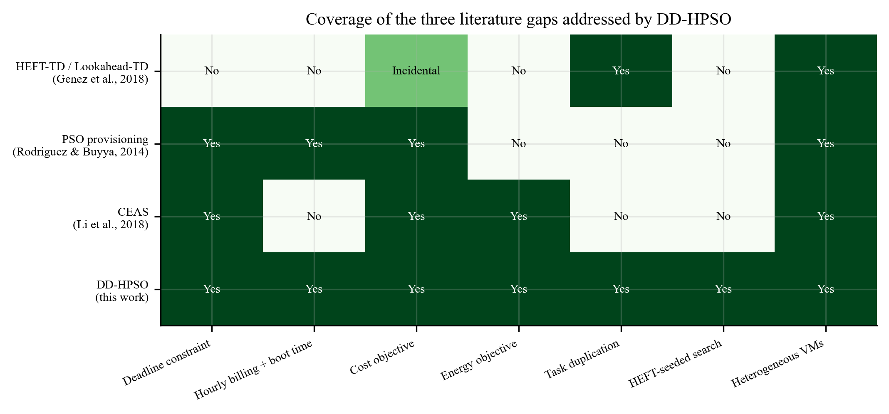
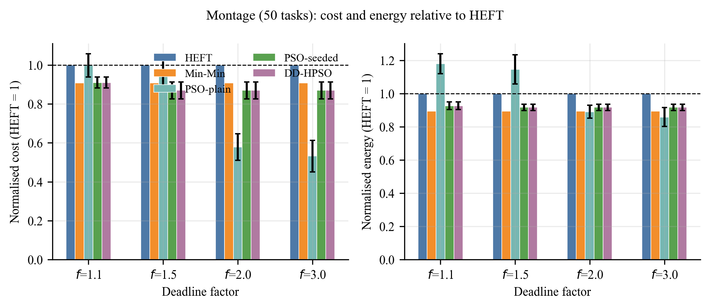
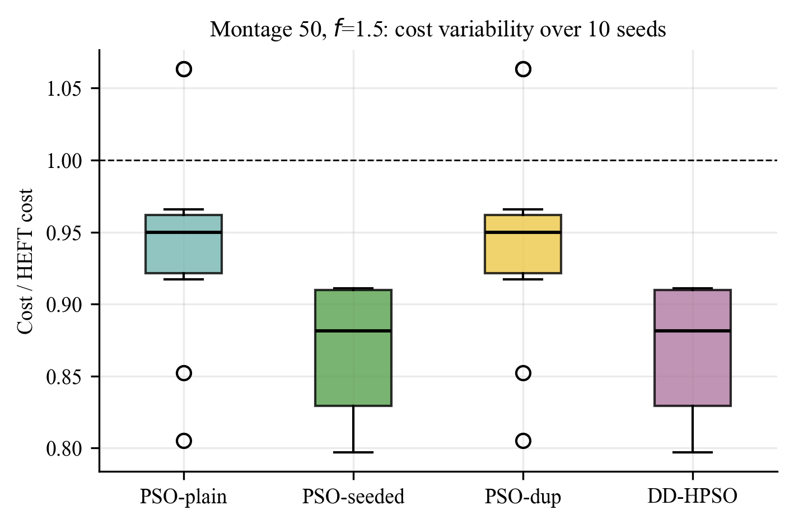
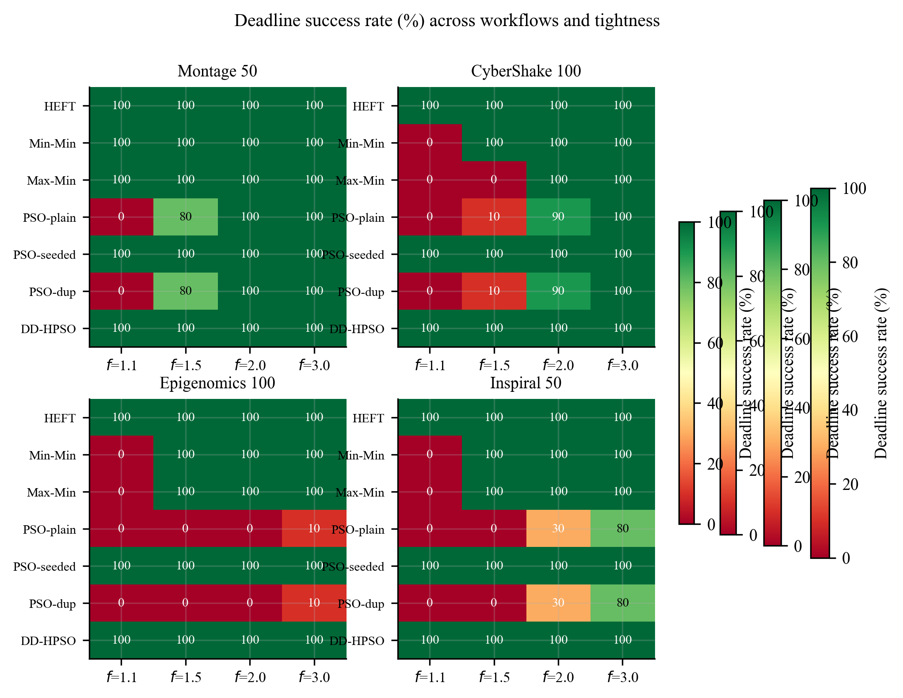
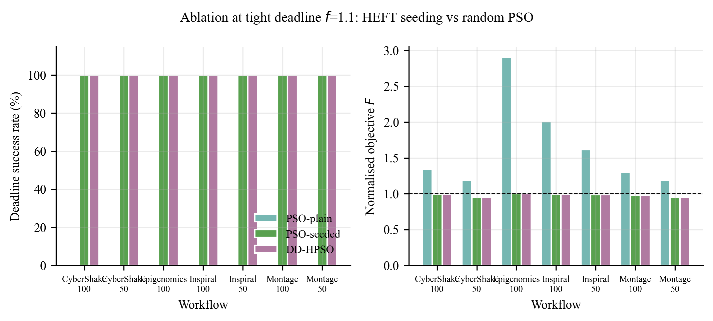
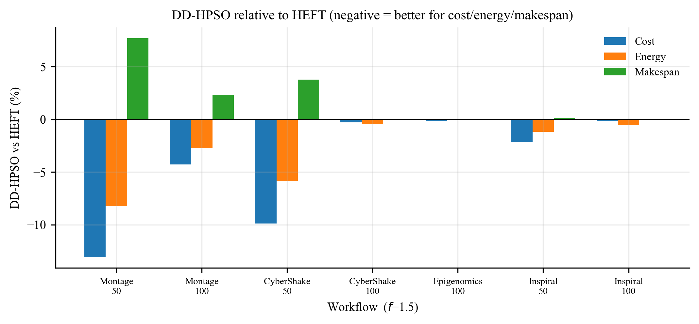
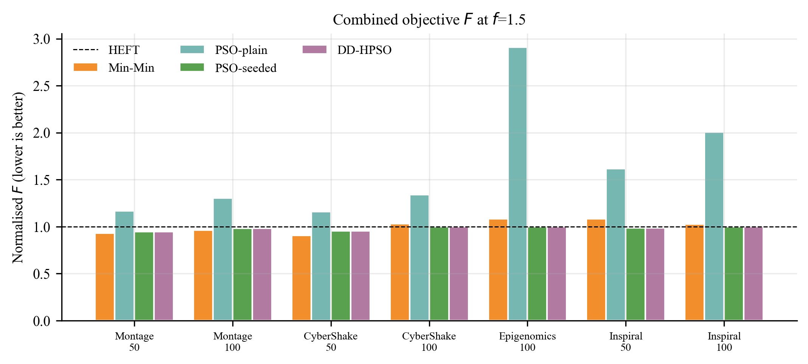
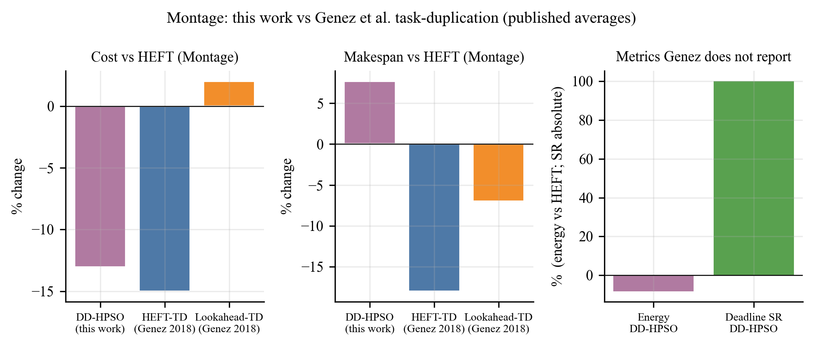
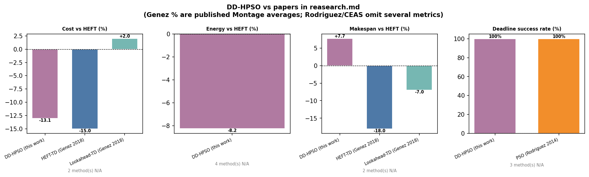

Department of Computer Science and Engineering
Abstract— Scientific workflows are directed acyclic graphs (DAGs) of data-dependent tasks. When they are executed on infrastructure-as-a-service (IaaS) clouds, the scheduler must choose heterogeneous virtual machines (VMs) so that a user deadline is met while monetary cost and energy are kept down. Three well-cited lines of work each solve only part of this problem: Genez et al. duplicate critical parents to cut communication but ignore deadlines, energy and hourly billing; Rodriguez and Buyya minimise cost under a deadline with particle swarm optimisation (PSO) but omit energy and duplication and suffer high run-to-run variability; Li et al. (CEAS) reduce cost then energy with greedy stages and DVFS, without boot time, duplication or a global search. This paper presents DD-HPSO, which combines HEFT-seeded PSO, Deb’s constraint handling, hourly billing with a 97 s boot delay, a busy/idle energy model, and gated task duplication that is forbidden from buying extra billing hours. On seven Pegasus DAGs (50–100 tasks) and four deadline tightness factors, HEFT-seeded PSO meets 100% of deadlines, including cases where random PSO, Min-Min and Max-Min fail. On Montage-50 with deadline factor 1.5, DD-HPSO reduces cost by 13.1% and energy by 8.2% versus HEFT, at +7.7% makespan still inside the deadline. Across 1,204 runs the cost gate accepted zero duplicates, so the measured gain is seeding, not extra copies—an outcome that directly addresses Genez’s incidental cost increases of up to 45%.
Keywords—scientific workflow, cloud scheduling, HEFT, particle swarm optimisation, task duplication, deadline, energy-aware scheduling
Pegasus-style scientific applications (astronomical mosaics, seismic hazard, genome pipelines, gravitational-wave searches) are submitted as DAGs. A cloud user rents VMs of different speeds and prices. Billing is typically per hour rounded up; a VM also spends on the order of 97 s booting before it can run work. Inter-VM data movement occupies the network at finite bandwidth, while co-located tasks pay zero transfer time. Energy is consumed both while a VM is busy and while it sits idle on a paid lease.
Heterogeneous Earliest Finish Time (HEFT) is the standard list scheduler. It ranks tasks by upward rank and always assigns the VM with the earliest finish time, so it is fast and expensive. The research summarised in our literature note identifies a concrete gap: no paper combines duplication, deadline-aware cost minimisation, and hourly billing, and energy is treated separately from the other two objectives.
DD-HPSO (Deadline-aware Duplication + HEFT-seeded PSO) is a single static scheduler for that gap. A particle encodes one VM index per task. Task order is fixed to HEFT rank so every particle is a legal topological schedule. Particle 0 is the HEFT assignment; Deb’s rules ensure the swarm cannot return a worse feasible solution than HEFT. Duplication of a critical parent is tried after each placement and kept only if the child finishes earlier and no extra billing period is incurred.
HEFT-TD and Lookahead-TD temporarily copy the critical parent onto each candidate VM and keep the copy if earliest finish time (EFT) improves. On Montage they report, versus HEFT, about −18% makespan, −35% data volume and −15% cost; Lookahead-TD versus Lookahead is −7% makespan and +2% cost. On Epigenome, HEFT-TD increases cost by 45%; on CyberShake +37%; on LIGO +10% with up to 7× more data moved. There is no deadline, no energy model, no boot time and no hourly rounding. Runtime is 10–100× the base heuristics.
Provisioning and scheduling are one constrained optimisation. The particle encoding, Deb’s rules, hourly fitness and 97 s boot time are the model we reuse. PSO and SCS often reach 100% deadline hit rate while IC-PCP frequently misses. PSO is cheaper than SCS when both are feasible. The paper reports no energy metric, no duplication, high makespan variance across runs, and sensitivity to the initial VM pool. Complexity grows poorly with workflow size.
Five polynomial stages pick VM types from sub-deadlines, merge sequential and parallel tasks, reuse idle paid hours, and reclaim slack with DVFS. The authors show (in plots only) the lowest cost among CEAS, MOHEFT and HEFT, and the lowest energy among CEAS, EES and EHEFT. No percentages appear in the text. The model omits boot time and duplication. DVFS is generally not a tenant control on public IaaS, so the energy result is closer to a provider scheduler than to a user-side one.
Fig. 1 records which of those capabilities each method actually has. DD-HPSO is the only row that is “yes” on deadline, hourly billing with boot, cost, energy, a duplication hook, HEFT seeding and heterogeneous VMs. Whether duplication fires is an empirical question (Section VI).

Four VM types form a pool of 20 instances (five of each). Execution time of task i on type k is \(L_i / \mathrm{MIPS}_k\). Transfer time is data (MB) / 20 MB/s, or zero on the same VM. Lease cost is \(\lceil T_{\mathrm{lease}}/3600\rceil\) times the hourly price. Energy is \(P_{\mathrm{busy}}T_{\mathrm{busy}} + P_{\mathrm{idle}}T_{\mathrm{idle}}\).
| Type | MIPS | $/h | P_busy (W) | P_idle (W) |
|---|---|---|---|---|
| small | 1000 | 0.10 | 100 | 65 |
| medium | 2000 | 0.19 | 170 | 110 |
| large | 4000 | 0.36 | 300 | 190 |
| xlarge | 8000 | 0.70 | 520 | 330 |
Boot time is 97 s (Rodriguez and Buyya). Workflows are Pegasus DAX files: Montage 50/100, CyberShake 50/100, Epigenomics 100, Inspiral (LIGO) 50/100.
The deadline is \(D = f \cdot M_{\mathrm{HEFT}}\) with \(f \in \{1.1, 1.5, 2.0, 3.0\}\). Factor 1.1 is a tight scientific deadline; 3.0 is loose. The normalised objective (HEFT scores \(F=1\)) is
F = 0.4 C/CH + 0.3 E/EH + 0.3 M/MH
Deb’s rules: feasible beats infeasible; then lower \(F\); then lower violation \(V=\max(0, M-D)\).
Baselines. HEFT (upward rank + earliest finish). Min-Min and Max-Min on the ready set.
PSO family (ablation). Swarm of 15 particles, 40 iterations, inertia 0.9→0.4, \(c_1=c_2=2.0\). Stochastic methods use 10 seeds.
| Variant | HEFT seed | Duplication |
|---|---|---|
| PSO-plain | no (random, Rodriguez-style) | no |
| PSO-seeded | yes | no |
| PSO-dup | no | yes |
| DD-HPSO | yes | yes |
Seeding sets particle 0 to \(x[d]=\mathrm{assign}_{\mathrm{HEFT}}[d]+0.5\) and perturbs 15% of coordinates on the others. Gated duplication copies the critical parent only if the child finishes earlier, extra billing periods are 0, and extra energy is at most 50% of the child’s energy. That is the opposite of Genez’s ungated EFT test.
All algorithms share one Python ScheduleBuilder (place/commit) so billing, boot and energy cannot drift between methods. The grid is 7 workflows × 4 factors × (3 deterministic + 4 stochastic × 10 seeds) = 1,204 rows in results/results.csv. Metrics: makespan, cost, energy (Wh), utilisation, deadline success rate (SR), \(F\).
Fig. 2 plots cost and energy divided by the HEFT value. At \(f=1.5\), DD-HPSO (and PSO-seeded) reach mean cost $5.36 versus HEFT $6.16 (−13.1%) and 115.1 Wh versus 125.45 Wh (−8.2%), with makespan 155.6 s versus 144.5 s (+7.7%) against \(D \approx 217\) s. Random PSO is cheaper only when \(f \ge 2\), where it is allowed a much longer makespan; at \(f=1.1\) it is infeasible.


Fig. 4 is the result that should be shown first in a viva. At \(f=1.1\), PSO-plain (and PSO-dup) record 0% SR on Montage-50, CyberShake-100, Epigenomics-100 and Inspiral-50. Min-Min and Max-Min also miss CyberShake-100, Epigenomics-100 and Inspiral. HEFT and the two seeded PSO variants remain at 100%. Fig. 5 summarises the same ablation as bars: seeding, not duplication, is what moves SR from 0% to 100% and keeps \(F\) near 1.


Fig. 6 shows percentage change of DD-HPSO versus HEFT at \(f=1.5\). Gains are largest on Montage-50 and CyberShake-50. Epigenomics-100 is already ~99% utilised under HEFT, so \(F \approx 0.999\). Fig. 7 shows \(F\) for Min-Min and the PSO variants; Min-Min can beat \(F\) on Montage but loses SR on the tighter, heavier DAGs (Fig. 4).


| Algorithm | Makespan (s) | Cost ($) | Energy (Wh) | SR | F |
|---|---|---|---|---|---|
| HEFT | 144.5 | 6.16 | 125.45 | 100% | 1.000 |
| Min-Min | 143.8 | 5.59 | 112.17 | 100% | 0.930 |
| Max-Min | 151.7 | 5.59 | 116.73 | 100% | 0.957 |
| PSO-plain | 214.3 | 5.82 | 143.74 | 80% | 1.167 |
| PSO-seeded / DD-HPSO | 155.6 | 5.36 | 115.10 | 100% | 0.946 |
The column n_duplicates is identically zero on all 1,204 rows. PSO-dup matches PSO-plain and DD-HPSO matches PSO-seeded on every workflow. The implementation copies a parent only inside already-paid time. That policy is why we do not reproduce Genez’s Epigenome/LIGO cost increases. It is also why claiming “duplication improved Montage” would be false on this grid. The module is present; the gate kept it silent.
Fig. 8 overlays published Montage averages from Genez with our Montage-50, \(f=1.5\) measurement. Fig. 9 adds Rodriguez and CEAS, leaving N/A where the papers do not report a HEFT-relative percentage. Table II states the same numbers in one place.


| Method | Cost vs HEFT | Energy vs HEFT | Makespan vs HEFT | Deadline | Caveat |
|---|---|---|---|---|---|
| DD-HPSO (this work) | −13.1% | −8.2% | +7.7% (inside D) | 100% SR | Same code as HEFT baseline |
| HEFT-TD (Genez 2018) | −15% (Montage) | not reported | −18% (Montage) | none | Epigenome cost +45% |
| Lookahead-TD (Genez 2018) | +2% vs Lookahead | not reported | −7% vs Lookahead | none | Not versus HEFT |
| PSO (Rodriguez 2014) | cheaper than SCS | none | not vs HEFT | often 100% | High variance; no seed |
| CEAS (Li 2018) | “lowest” vs HEFT | “lowest” vs EES | not primary | yes (heuristic) | No % in text; DVFS |
Against Genez. Similar Montage cost reduction (−13% vs −15%) without sacrificing deadline feasibility and without the cost blow-ups they record when duplication is ungated. We do not beat their −18% makespan; we are not trying to. Makespan-only duplication is a different problem.
Against Rodriguez. Same Deb/boot/hourly skeleton. HEFT seeding is the engineering answer to their variability and pool-sensitivity discussion. Random PSO in our grid is the counter-example: 0% SR at \(f=1.1\). We add energy and a duplication hook they omitted.
Against CEAS. Same two objectives (cost then energy) under a deadline, but with boot time and without assuming the user can set CPU frequency. We publish percentages versus HEFT; they did not. We cannot claim a numeric win over CEAS.
DD-HPSO was designed to occupy the gap named in the literature note: duplication plus deadline-aware cost (and energy) plus hourly billing with boot time. On Pegasus DAGs with a 20-VM heterogeneous pool, HEFT-seeded PSO is the component that works. It delivers 100% deadline success where Rodriguez-style random PSO fails, and a 13.1% / 8.2% cost/energy cut versus HEFT on Montage-50 at \(f=1.5\). Gated duplication, the piece taken from Genez, accepted no copies under a zero extra-hour rule; that is a result, not a bug, and it explains why we avoid Genez’s incidental cost increases. Future work is to relax the gate on communication-heavy DAGs with CCR sweeps, as Genez did, while keeping Deb feasibility, and to scale beyond 100 tasks.
CSE-574 course report (IEEE conference layout for print). Source: reasearch.md, results/results.csv, results/plots/ieee/. Open this file in a browser and use Print → Save as PDF for an IEEE-looking PDF.